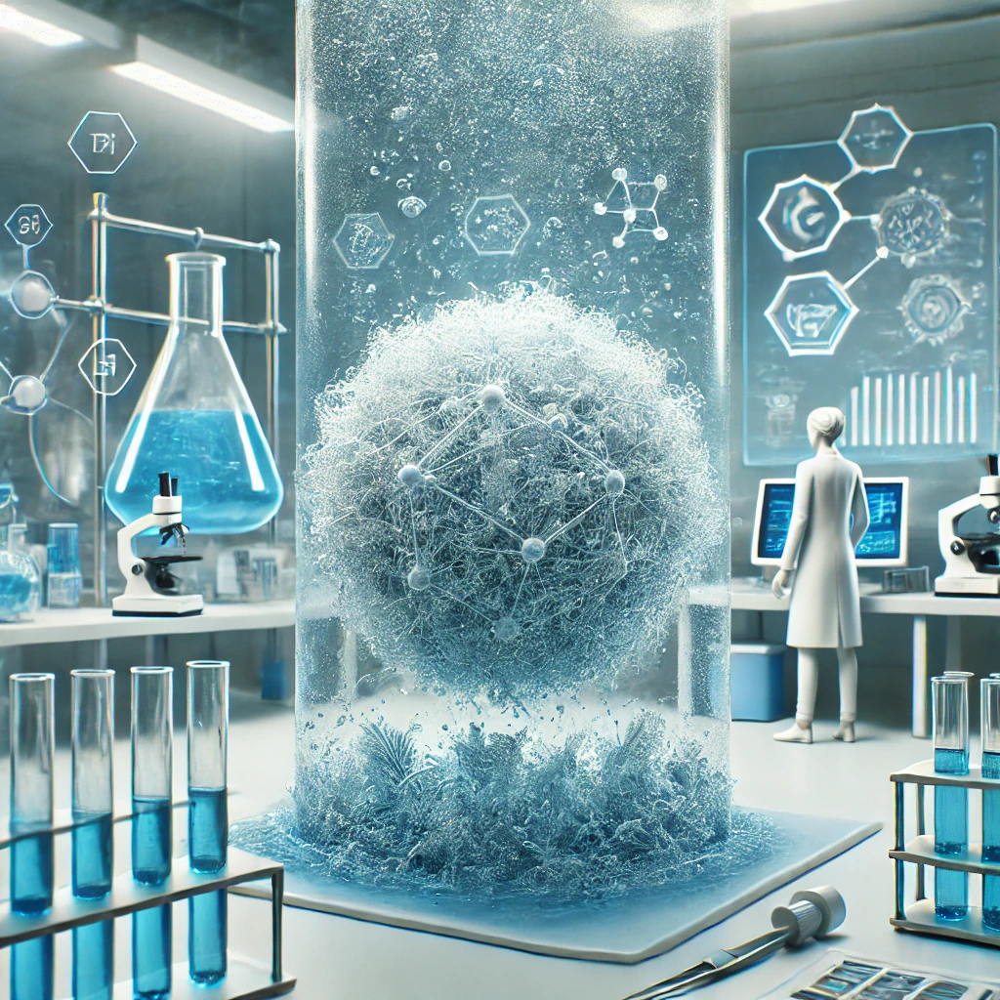

Carla Mendes
Em um avanço promissor para a luta contra a poluição ambiental, cientistas de um renomado instituto de pesquisa em materiais sustentáveis anunciaram o desenvolvimento de um novo tipo de plástico biodegradável. Diferente dos plásticos convencionais, que podem levar séculos para se decompor, esse material inovador se degrada completamente em poucos dias quando exposto a condições ambientais específicas.
Feito a partir de biopolímeros extraídos de fontes naturais como amido de milho, celulose e proteínas vegetais, o novo plástico mantém a resistência e a flexibilidade do plástico tradicional, mas sem deixar resíduos prejudiciais ao meio ambiente. Especialistas acreditam que essa descoberta pode revolucionar a indústria de embalagens e reduzir significativamente o impacto da poluição plástica nos oceanos e aterros sanitários.
A tecnologia por trás desse material envolve o uso de polímeros orgânicos altamente degradáveis combinados com aditivos que aceleram o processo de decomposição. Quando descartado em ambientes úmidos ou ricos em microrganismos, o plástico começa a se fragmentar em partículas menores e, em poucos dias, é completamente metabolizado por bactérias e fungos presentes na natureza.
O novo plástico biodegradável pode representar uma solução viável para um dos maiores desafios ambientais da atualidade: o acúmulo de resíduos plásticos em ecossistemas terrestres e marinhos. De acordo com estimativas da ONU, mais de 300 milhões de toneladas de plástico são produzidas anualmente, e grande parte desse material acaba poluindo oceanos, rios e solos.
“Nosso objetivo era criar um material que oferecesse os benefícios do plástico tradicional, mas sem os danos ambientais”, explica a Dra. Mariana Vasconcelos, líder do projeto.